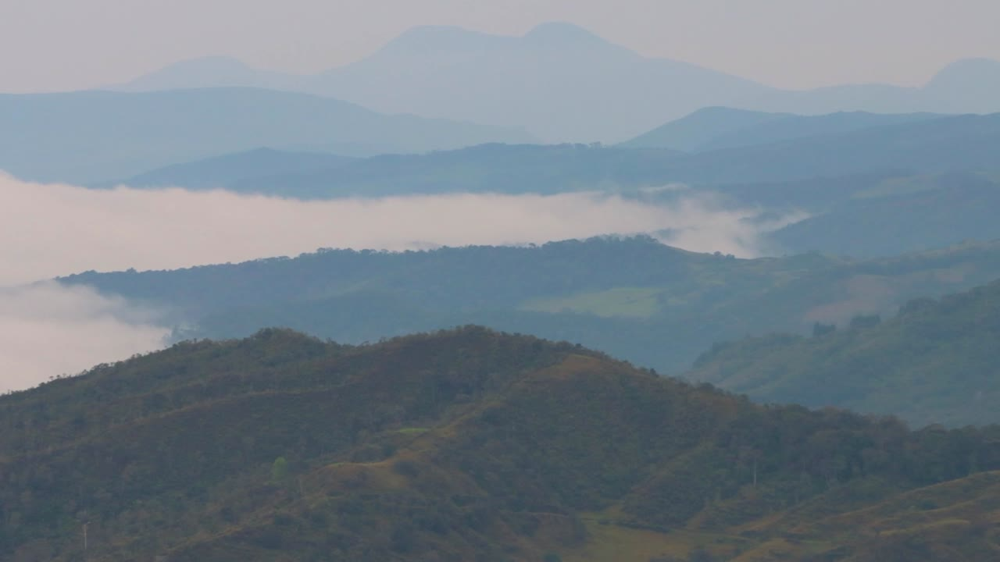

← Todos los proyectos
Documental
Guardianes de la Naturaleza
Un documental que acerca al espectador al entorno natural a través de paisajes, detalles e intervenciones de sus protagonistas.

SOBRE EL PROYECTO
Escuchar a quienes habitan y cuidan el entorno.
La pieza combina imágenes de territorio y vegetación con testimonios en exteriores. Esa relación entre paisaje y voz permite presentar la naturaleza desde una perspectiva documental.
Video en YouTube
LENGUAJE DOCUMENTAL
Territorio, testimonios y observación.
Los planos generales sitúan la historia en un entorno; los detalles acercan al espectador a sus texturas, y los testimonios aportan la dimensión humana del relato. El documental completo está disponible en YouTube.